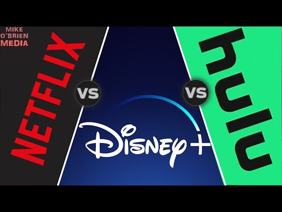

Netflix vs Hulu vs Disney by Mike O'Brian
Netflix
Pros
- Price is decent
- Amount of content
- Range of content
Cons
- Limited content for children
- Limited A list movies
Reviews
"I have Netflix and it is my second favorite streatming service."
Hulu
Pros
- Price is decent
- Quality of content
- Excellent original content
Cons
- Limited content for children
- Lack of range of content
Reviews
"Hulu is my favorite becaue I like 'The Bear'"
Disney+
Pros
- Price is good
- Childrens content
- Hulu included
Cons
- Limited content for adults
- Less than impressive interface
Reviews
"I only like Disney because I watch old cartoons"